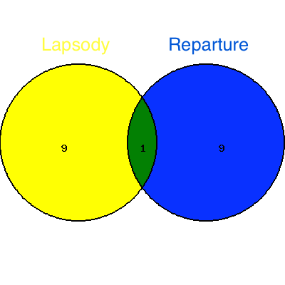
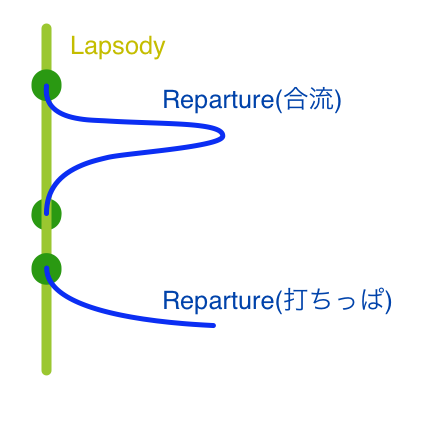

LapsodyとRepartureとかそういう名前で言語作りたい
概要
サービスを複数のpeerで構成、連携させて動かすとき、
フローを制御するのに専念する言語と、
フローから逸脱して処理を行い、フローに合流するか消滅するだけの用途の言語を、
共有領域持ったままシームレスにぶっ叩けるように
意図的に分けて作ると面白いのではないかみたいな話してた。
由来
Lapsodyは「経過」を表すLapseのもじり、
Repartureは「出発」って意味のDepartureのもじり。
目的
1.サービスの全体フローを一つの言語で見渡しよく描く
2.合流、離脱を行う処理をフローとは分けて書く
3.分散環境で面倒くさい「merge」や「abort」を可視化しやすくする
4.サービスの部分死を可能にする
仕様というか気分
・分散VMとかで動作して
・peerを超えるの前提で
・Lapsody側でループだったりストリームだったりを扱って
・Reparture側で枝化と処理完遂からの合流を行う
・ごく薄い、混ぜて書ける領域と、別離された領域を持つ
・それぞれの言語のkeywordにはlmatchとかrmatchみたいにl,rをそれぞれ頭につける
・2つmodeがある格ゲーキャラみたいな立ち位置を目指す

動作イメージ
Lapsodyで機関全体の制御を集中しておこなう。状態は持たず、フローの束をもち、必ず永続する。
Repartureで「一度離反して合流」か「離反してそれっきり」みたいな動作を行う。
Lapsody側とReparture側の中継ポイントにはportみたいなものが配置されて、離脱記録とか合流記録を保持し、
スケーリングもこのポイントを主点にして行う。

これで、意図的に打ちっぱなしや合流が書ける。
複数のフローを持つようにつくる(一つのサービスに対してLapsodyが複数のインスタンスを持つ)のを禁止したほうがよさそうな
気がする。